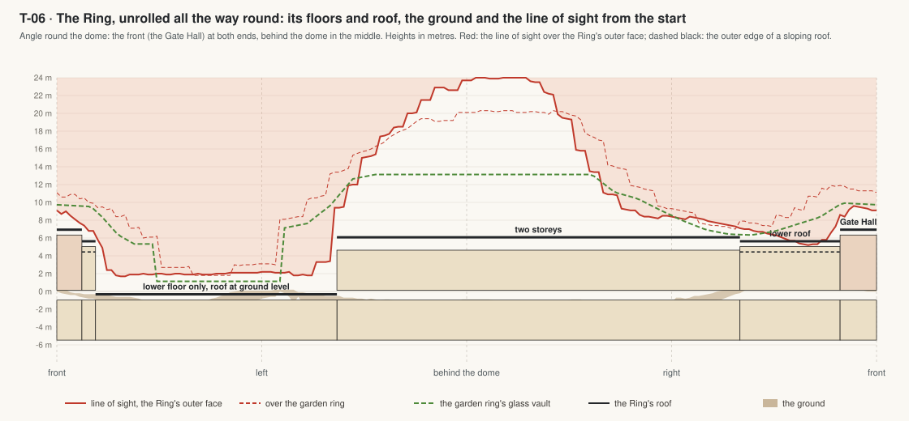
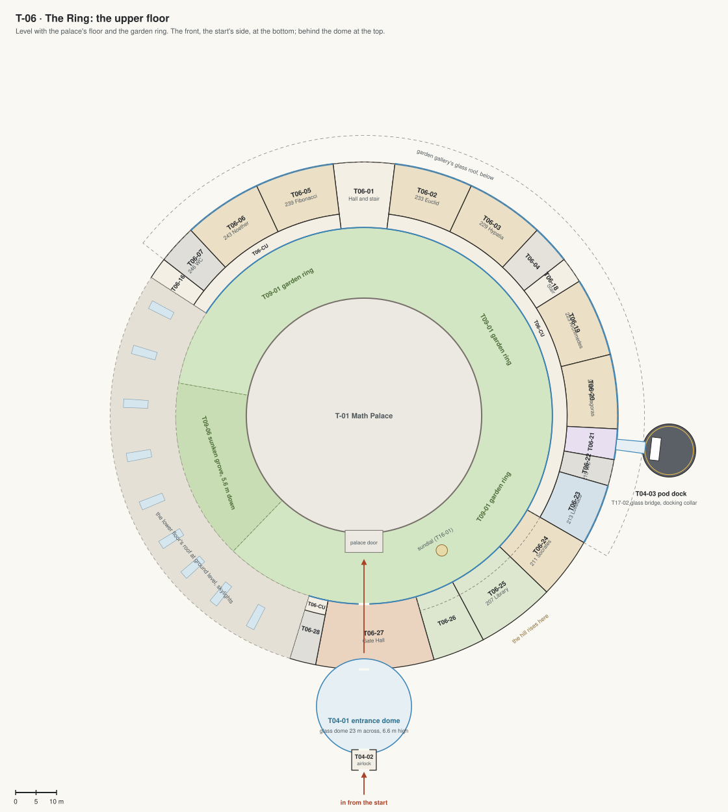
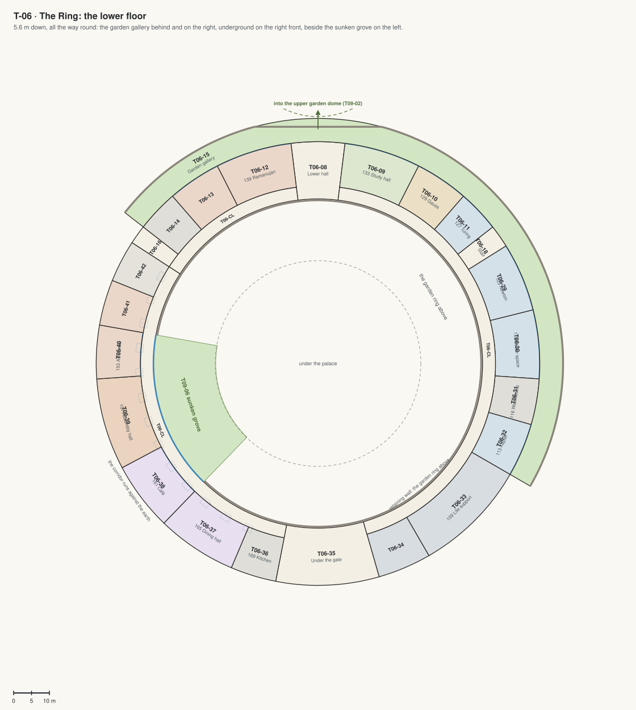

T-06 · The Ring
The whole school in one ring round the Math Palace, like Apple Park's ring but sealed for Mars and set into the crater's slope: the Crescent grows all the way round, the two wings' rooms move into it, the courtyard becomes the entrance under a glass dome, and the garden ring under glass fills the space between the Ring and the dome.
Jim, 5 Oct 2026: "why classroom building are half? please build the circle around the dome, like apple headquarter building"; "the entrance is not sealed by dome. it needs to. overall I like this structure similar like apple headerqueate but much more future proof and impressive than it".
- One ring, 340 m round its middle, between radii 46 and 62 m round the dome, 16 m deep: rooms on the outside, a corridor along the garden glass. The lower floor's corridor goes all the way round; the upper floor's from the west stair round the back and the right to the Gate Hall.
- Set into the slope. Two storeys behind and beside the dome, where the ground falls to the plain. On the right front, where the hill rises, the upper floor's roof slopes down toward it. The Gate Hall at the front, two storeys tall. On the left front, where the start looks down through a dip in the ridge, only the lower floor, its roof at ground level with skylights, beside the sunken grove; so the campus still stays hidden until you reach the ridge. The roof line rises and falls with the hill all the way round (the profile below).
- The way in: from the start through the airlock (T04-02) into the entrance dome (T04-01), a plaza under glass 23 m across; through the Gate Hall into the garden ring; on to the palace's door.
- The pods dock at the pod dock off the right side (T04-03): the pod settles onto its spot, the docking collar runs out from the glass bridge (T17-02) and you walk straight into the pod lounge (T06-21).
- The wings come down: M1 Mathematics becomes Pythagoras (T06-20), the coding lab Lovelace (T06-23), the seminar room Socrates (T06-24); the library (T06-25), the reading room (T06-26) and the café (T06-38) move in; reception and the lobby become the Gate Hall (T06-27).
- Future-proof: 36 bays of 10° on one steel frame with the same facade panels, so any bay can change its use; a metre of water in sealed cells in the roof, a shield against cosmic rays and the campus's water store; the air, water and power run round the lower floor's corridor; the frame over the back half is sized for a third storey.

Finding the way, and the corridors' prints
Blade signs hang across the corridors, upstairs at -42, -20, 20, 42, 70, 95, 120, 146° and downstairs at -42, -20, 20, 42, 70, 95, 120, 146, 205, 228, 252, 276, 295°: each face lists the room numbers ahead of you that way, up to the next sign, and the stairs and halls. A lit green exit sign hangs over each stair's door on both floors. Every room has its number beside each of its doors (v0.14).
On the lower corridor's long back wall, a walk of framed prints of mathematics, each facing a room and showing what it is named for or used for; at the upper corridor's two blind ends a print over a bench. Each print 1.8 by 1.2 m in a walnut frame under a brass picture light; benches where people wait, each with a plant chosen for its light: downstairs, with no daylight, ones that live in low light; at the upper ends, by the garden glass, a fig and a bird of paradise.
| What it shows | Where | Beside it | |
|---|---|---|---|
| The knight's tour | a knight visits every square of the board once and comes home | lower corridor at -34°, facing Games room and lounge (143) | |
| The partitions of 6 | eleven ways to break six into parts, the counting Ramanujan and Hardy solved | lower corridor at -13°, facing Ramanujan: competition room (139) | a bench, a anthurium |
| Pascal's triangle, odd numbers marked | the odd entries draw Sierpinski's triangle | lower corridor at 13°, facing Study hall (133) | |
| The Galton board | balls bouncing left or right pile up into Gauss's bell curve | lower corridor at 34°, facing Gauss (129) | a bench, a snake |
| A Turing pattern | two chemicals reacting and spreading make stripes and spots, as Turing showed | lower corridor at 47.5°, facing Turing (127) | |
| Newton's cannon | fire fast enough from a mountain and the ball falls round the Earth for ever | lower corridor at 63°, facing Newton (123) | a bench, a fern |
| The Hilbert curve | one path that passes through every cell of the square | lower corridor at 85°, facing Maker space (119) | |
| Kepler's second law | a planet sweeps equal areas in equal times | lower corridor at 111°, facing Kepler (113) | a bench, a bromeliad |
| The golden angle | seeds set 137.5 degrees apart pack a sunflower's head | lower corridor at 133°, facing Life support (109) | |
| The five Platonic solids | the only solids with equal regular faces and equal corners | lower corridor at 157°, facing Store and archive (105) | |
| Buffon's needle | drop needles on lines: the share that cross tells you pi | lower corridor at 196°, facing Kitchen (169) | |
| A Penrose tiling | two rhombs tile the floor for ever and never repeat | lower corridor at 214°, facing Dining hall (165) | |
| The harmonics of a string | a string vibrates in halves, thirds, quarters: the notes of music | lower corridor at 286°, facing Music room (151) | a bench, a kentia |
| Times two round a circle | join each of 200 points to its double and a heart appears | lower corridor at 300.5°, facing Clinic and counsellor (149) | a bench, a monstera |
| The Mandelbrot set | the points that stay near home under z to z squared plus c | upper corridor, its west end (-57°) | a bench, a fig |
| The golden rectangle | squares of the Fibonacci numbers and the spiral through them | upper corridor, its east end (197°) | a bench, a strelitzia |
| Two pendulums | a pen hung from two swinging pendulums draws a figure that dies away | in the Reading room (T06-26), on its back wall | |
| Ford circles | a circle on every fraction, 1/q squared across: neighbours only ever touch | in the Reading room (T06-26), on its back wall | |
| Rose curves | r = cos(k theta): petals for every fraction k | in the Reading room (T06-26), on its front wall |
Notice boards of cork in aluminium frames on the lower corridor's back wall: Contests this term at -29° (each of the term's contests on its own flyer, from the contest sheet); Clubs and events at 177.5° (the clubs and events the rooms are planned for: robotics club, chess and coffee after school, chess tournaments, the choir, planetarium shows for families, science fair, lessons on how Mars air and water are made, robotics contests, evening classes for adults, parents' evenings, clubs after school, exhibitions of students' work, welcome days, the graduation reception). A stainless bottle filler over a drinking fountain on the corridor wall beside the door of Washrooms and store (145), Washrooms (116), Washrooms (215).


| Code | No. | Room | What it is for | Size |
|---|---|---|---|---|
| T06-01 | Hall and stair | The way in from the garden ring and down to the garden gallery: a hall two storeys tall with a wide stair and a lift, the timetable on a screen, two long benches by the garden glass; its two tall side walls lined from the lower floor to the ceiling with oak slats on dark felt, warm to look at and quiet to hear. Also: Exhibitions of students' work. | 210 m² | |
| T06-02 | 233 | Euclid | Classroom for geometry: 30 seats at double desks, a whiteboard wall, compasses and models of the solids. Also: Evening classes for adults. | 220 m² |
| T06-03 | 229 | Hypatia | Classroom for algebra and measurement: 30 seats, two whiteboards, a demonstration bench. | 220 m² |
| T06-04 | 227 | Teachers' room | Desks for the teachers, a meeting table, a kitchenette, lockers and a long sofa. Also: Marking and lesson planning. | 110 m² |
| T06-18 | East stair and lift | A stair and a lift between the floors in the room band, behind fire doors; the corridors pass by. | 140 m² | |
| T06-19 | 223 | Archimedes | Classroom for mechanics: 30 seats, a demonstration bench with levers, pulleys and a balance. Also: Science fair. | 220 m² |
| T06-20 | 219 | Pythagoras | The wing's M1 Mathematics moves here: 30 seats, a long whiteboard, the proof of Pythagoras in tiles on the wall. Also: Exams. | 210 m² |
| T06-21 | 217 | Pod lounge | The glass bridge to the pod dock starts here, through a sliding door in the outer glass: long benches by the glass either side of it, a screen with the pods' places and charge on the wall by the corridor's door, a coat rack. | 85 m² |
| T06-22 | 215 | Washrooms | Washrooms for the right side of the upper floor. | 72 m² |
| T06-23 | 213 | Lovelace | The wing's coding lab moves here: 20 workstations with two screens each, a big screen for the teacher. Also: Robotics club. | 170 m² |
| T06-24 | 211 | Socrates | The wing's seminar room: one long table for 20, a screen and a whiteboard, under the roof that slopes down toward the hill (ceiling 4.9 to 3.7 m). Also: Parents' evenings. | 210 m² |
| T06-25 | 207 | Library | The wing's library: shelves along the outer wall, reading tables by the glass onto the garden ring, the librarian's desk, under a sloping ceiling (4.9 to 3.7 m). | 270 m² |
| T06-26 | 204 | Reading room | The wing's reading room: deep armchairs and long sofas by the garden glass, lamps, a quiet room, under a sloping ceiling. | 180 m² |
| T06-27 | Gate Hall | The way in, two storeys tall: from the entrance dome through the Ring into the garden ring and on to the palace's door; the reception desk, the Fall timetable on a wall of screens with every class's room, a wide stair down to the lower corridor and a glass lift, benches and tall plants. Also: Welcome days, the graduation reception. | 410 m² | |
| T06-28 | 269 | Lockers | Lockers and washrooms by the Gate Hall, whose stair goes down to the dining hall and the café on the lower floor. | 90 m² |
| T06-16 | West stair and lift | A stair and a lift where the upper floor ends on the west: down to the lower floor that goes on all the way round. | 120 m² | |
| T06-07 | 246 | Washrooms | Washrooms for the upper floor, above the lower ones; a cleaner's cupboard. | 110 m² |
| T06-06 | 243 | Noether | Classroom for symmetry and abstract algebra: 30 seats, a wall of tilings. | 220 m² |
| T06-05 | 239 | Fibonacci | Classroom for number patterns: 30 seats, a wall of sequences and spirals. | 220 m² |
| T06-CU | Upper corridor | Along the garden side behind glass, from the west stair round the back and the right, through the Gate Hall to the stair down by the gate. | 510 m² | |
| T06-08 | Lower hall | Under the hall's gallery: glass doors out to the garden gallery and the garden domes; by the glass a seating group on a rug: two long sofas facing over a low table, an armchair at each end, a fig and a kentia palm beside it. Also: Parents wait here; small talks after class. | 210 m² | |
| T06-09 | 133 | Study hall | A quiet room for homework: 40 carrels with lamps, a librarian's desk, shelves along the corridor wall. Also: Exam room. | 240 m² |
| T06-10 | 129 | Gauss | Classroom for statistics and data: 24 seats at tables with screens. | 170 m² |
| T06-11 | 127 | Turing | Computer classroom: 16 workstations for coding and modelling. | 130 m² |
| T06-29 | 123 | Newton | The physics lab: six benches with gas, power and water, a vacuum chamber, a pendulum hanging from the ceiling, glass onto the garden gallery. | 220 m² |
| T06-30 | 119 | Maker space | Workbenches, 3D printers, a laser cutter and the robot rovers the students build; a roller door to the gallery. Also: Robotics contests. | 220 m² |
| T06-31 | 116 | Washrooms | Washrooms for the right side of the lower floor, under the upper ones. | 140 m² |
| T06-32 | 113 | Kepler | The astronomy room: 24 seats under a small dome screen that shows the sky from anywhere, star maps, a model of the solar system. Also: Planetarium shows for families. | 170 m² |
| T06-33 | 109 | Life support | The campus's air, water and heat: CO2 scrubbers, oxygen from water, water recycling and the heat pumps, behind a glass wall so classes can watch them work. Also: Lessons on how Mars air and water are made. | 360 m² |
| T06-34 | 105 | Store and archive | Spare furniture, teaching kit, the archive of exam papers. | 170 m² |
| T06-35 | Under the gate | The lower corridor passes under the Gate Hall; a stair up into it, washrooms. | 410 m² | |
| T06-36 | 169 | Kitchen | The kitchen and the servery for the dining hall, with its stores and the goods lift. | 140 m² |
| T06-37 | 165 | Dining hall | Lunch for 120 at long tables under skylights; its far end opens onto the sunken grove. Also: Parties, exams. | 250 m² |
| T06-38 | 161 | Café | The wing's café moves here: the espresso bar, the chalk menu, tables and long sofas, glass onto the sunken grove. Also: Chess and coffee after school. | 220 m² |
| T06-39 | 157 | Assembly hall | A flat hall for 150 with a low stage, glass onto the sunken grove: assemblies, plays, dance. Also: Exams, the science fair. | 290 m² |
| T06-40 | 153 | Art studio | Easels, a long sink, a kiln, glass onto the sunken grove. | 170 m² |
| T06-41 | 151 | Music room | A grand piano, practice booths, instruments on the walls, under skylights. Also: The choir. | 140 m² |
| T06-42 | 149 | Clinic and counsellor | The nurse's room with a bed, the counsellor's quiet room, under skylights. | 130 m² |
| T06-14 | 145 | Washrooms and store | Washrooms for the lower floor and a store for chairs and teaching kit. | 130 m² |
| T06-13 | 143 | Games room and lounge | Chess, Go, puzzles and math games at tables, shelves of games, a Rubik's cube wall; long sofas and a coffee machine by the glass onto the garden gallery. Also: Clubs after school. | 170 m² |
| T06-12 | 139 | Ramanujan: competition room | Math olympiad training and contests: team tables, a scoreboard on the wall, a stage for the problem reader. Also: Chess tournaments. | 240 m² |
| T06-CL | Lower corridor | All the way round on the garden side: the Ring's main street, with the air, water and power above its ceiling. | 960 m² | |
| T06-15 | Garden gallery | The court along the garden front and the right side, under a sloping glass roof from the Ring's eave to a low stone wall: planters, benches, the doors of the lower rooms; behind the dome it opens into the garden domes. | 1270 m² | |
| T04-01 | Entrance dome | The plaza in front of the Gate Hall under a glass dome 23 m across: an upright glass drum 3 m tall on a stone curb, a shallow cap on a ring beam to 6.8 m, on a bronze lattice, its back on the Ring's front; the airlock comes in through a framed doorway in the drum: paving, the campus's name on a stone wall, planters with young trees, benches. Also: Arrivals and farewells, the graduation photo. | ||
| T04-02 | Entrance airlock | At the dome's front: outer and inner sliding glass doors with a chamber 5 m long between them, never open together; suit lockers and a bench. | 30 m² | |
| T04-03 | Pod dock | A round deck 13 m across off the Ring's right side, 1.35 m below the upper floor and just clear of the ground on short steel legs, a ring of lights round its edge: a pod settles side-on onto its docking spot with its canopy's sill level with the glass bridge, the collar runs out over its halo to the canopy, and you walk straight into the Ring's pod lounge. |